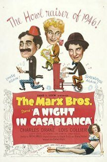

THE STANFORD THEATRE
Now Showing
·
Upcoming
·
Past
·
Search
February 4 - March 27, 2005
The best of Preston Sturges and the Marx Brothers
16 bills
February 4
The Great McGinty (1940)
80 min
The Cocoanuts (1929)
93 min
February 5 - 6
The Great McGinty (1940)
80 min
The Cocoanuts (1929)
93 min
February 11
The Miracle of Morgan's Creek (1944)
99 min
Animal Crackers (1930)
93 min
February 12 - 13
The Miracle of Morgan's Creek (1944)
99 min
Animal Crackers (1930)
93 min
February 18
The Lady Eve (1941)
97 min
Duck Soup (1933)
68 min
February 19 - 20
The Lady Eve (1941)
97 min
Duck Soup (1933)
68 min
February 25
The Palm Beach Story (1942)
88 min
Horse Feathers (1932)
64 min
February 26 - 27
The Palm Beach Story (1942)
88 min
Horse Feathers (1932)
64 min
March 4
Christmas in July (1940)
67 min
Monkey Business (1931)
77 min
March 5 - 6
Christmas in July (1940)
67 min
Monkey Business (1931)
77 min
March 11
Unfaithfully Yours (1948)
128 min
A Night at the Opera (1935)
87 min
March 12 - 13
Unfaithfully Yours (1948)
128 min
A Night at the Opera (1935)
87 min
March 18
Sullivan's Travels (1941)
90 min
Room Service (1938)
78 min
March 19 - 20
Sullivan's Travels (1941)
90 min
Room Service (1938)
78 min
March 25
Hail the Conquering Hero (1944)
101 min

A Night in Casablanca (1946)
85 min
March 26 - 27
Hail the Conquering Hero (1944)
101 min
A Night in Casablanca (1946)
85 min
Archived
•
StanfordTheatre.org Original